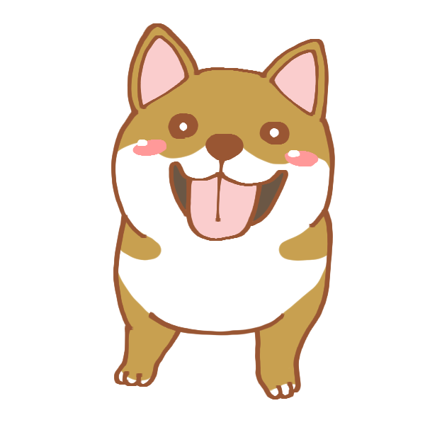

About me
京都府出身のエンジニア。
とある大学で経済学を学んだのち、某ガラスメーカーの営業に従事。
その後ITの技術にひかれ、31才でIT業界へ転職。運用・テクニカルサポートからキャリアをスタートし、Javaでの経理システムの改修、Linuxシェルでのシステム構築などを経験し、Vue.jsでのアプリ開発を個人的に勉強中
機能紹介
コンテンツを一言で説明します
ここはエンジニアKinoshitaのポートフォリオサイトです
これまでに手がけた製作物、身につけたスキルをまとめています。
あなたに私のことをもっと深く知って欲しいと思って作りました。
どうぞお茶でも飲みながらごゆるりとサイト内を散策してください。
京都府出身のエンジニア。
とある大学で経済学を学んだのち、某ガラスメーカーの営業に従事。
その後ITの技術にひかれ、31才でIT業界へ転職。運用・テクニカルサポートからキャリアをスタートし、Javaでの経理システムの改修、Linuxシェルでのシステム構築などを経験し、Vue.jsでのアプリ開発を個人的に勉強中
コンテンツを一言で説明します